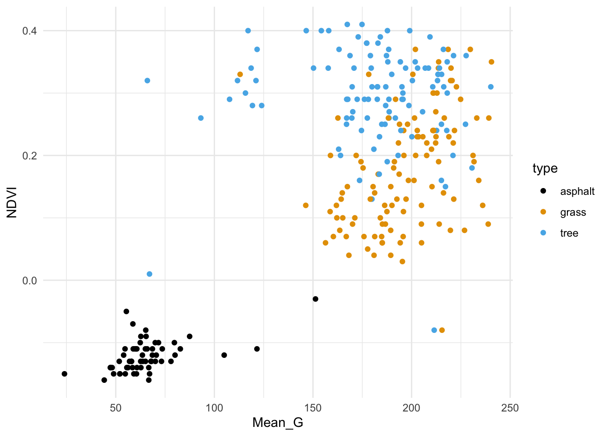
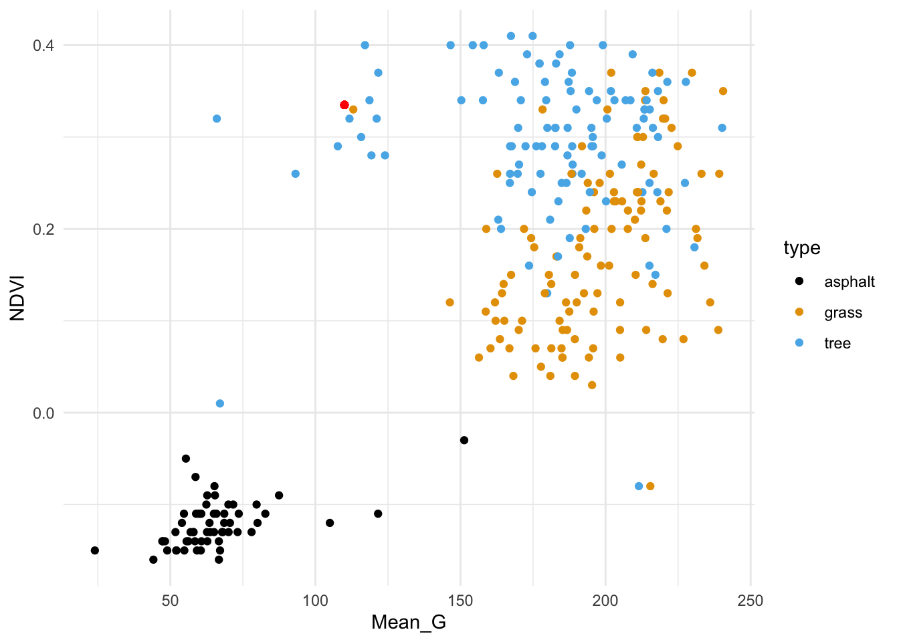
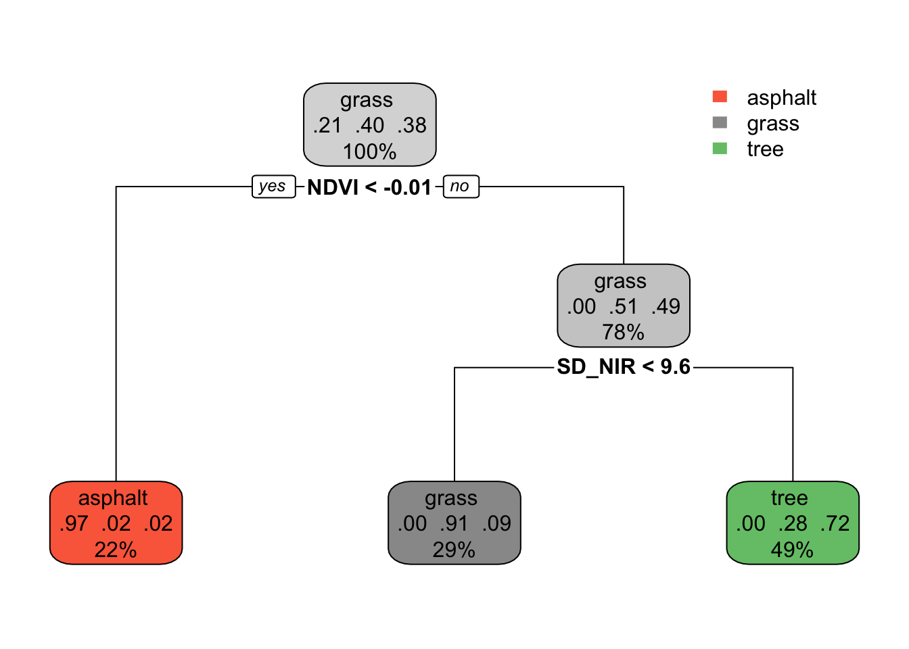

If you didn’t already, install the two R packages we need today: rpart and rpart.plot
Happy Halloween!
Learning Goals
Clearly describe the recursive binary splitting algorithm for tree building for both regression and classification
Compute the weighted average Gini index to measure the quality of a classification tree split
Compute the sum of squared residuals to measure the quality of a regression tree split
Explain how recursive binary splitting is a greedy algorithm
Explain how different tree parameters relate to the bias-variance tradeoff
Notes: Nonparametric Classification
Where are we?
CONTEXT
world = supervised learning
We want to model some output variable \(y\) using a set of potential predictors (\(x_1, x_2, ..., x_p\)).
task = CLASSIFICATION \(y\) is categorical
algorithm = NONparametric
. . .
GOAL
Just as least squares and LASSO in the regression setting, the parametric logistic regression model makes very specific assumptions about the relationship of a binary categorical outcome \(y\) with predictors \(x\).
Specifically, it assumes this relationship can be written as a specific formula with parameters\(\beta\):
\[\text{log(odds that y is 1)} = \beta_0 + \beta_1 x_1 + \beta_2 x_2 + ... + \beta_k x_k\]
NONparametric algorithms will be necessary when this model is too rigid to capture more complicated relationships.
Motivating Example
Aerial photography studies of land cover is important to land conservation, land management, and understanding environmental impact of land use.
IMPORTANT: Other aerial photography studies focused on people and movement can be used for surveillance, raising major ethical questions.
# Load packageslibrary(tidymodels)library(tidyverse)# Load & process data# There are 9 types of land use. For now, we'll only consider 3 types.# There are 147 possible predictors of land use. For now, we'll only consider 4 predictors.land_3 <-read.csv("https://kegrinde.github.io/stat253_coursenotes/data/land_cover.csv") %>%rename(type = class) %>%filter(type %in%c("asphalt ","grass ","tree ")) %>%mutate(type =as.factor(type)) %>%select(type, NDVI, Mean_G, Bright_100, SD_NIR)
# Check it outhead(land_3)
type NDVI Mean_G Bright_100 SD_NIR
1 tree 0.31 240.18 161.92 11.50
2 tree 0.39 184.15 117.76 11.30
3 asphalt -0.13 68.07 86.41 6.12
4 grass 0.19 213.71 175.82 11.10
5 tree 0.35 201.84 125.71 14.31
6 tree 0.23 200.16 124.30 12.97
# Table of land typesland_3 %>%count(type)
type n
1 asphalt 59
2 grass 112
3 tree 106
Thus we have the following variables:
type = observed type of land cover, hand-labelled by a human (asphalt, grass, or tree)
factors computed from the image
Though the data includes measurements of size and shape, we’ll focus on texture and “spectral” measurements, i.e. how the land interacts with sun radiation.
NDVI = vegetation index
Mean_G = the green-ness of the image
Bright_100 = the brightness of the image
SD_NIR = a texture measurement (calculated by the standard deviation of “near infrared”)
Limits of Logistic Regression
Why can’t we use logistic regression to model land type (y) by the possible predictors NDVI, Mean_G, Bright_100, SD_NIR (x)?
Parametric v. Nonparametric Classification
There are parametric classifications algorithms that can model y outcomes with more than 2 categories. But they’re complicated and not very common.
We’ll consider two nonparametric algorithms today: K Nearest Neighbors & classification trees.
Nonparametric Classification
Pro: flexibility
Assume there is a relationship between y and x, but don’t make any assumptions about the “shape” of this relationship.
This is good when our relationships are complicated!
Cons:
lack of insights: Can be useful for classification, but provide fewer insights into the relationships we’re modeling (eg: no coefficients, p-values, etc).
ignoring information about relationships: When the assumptions of a parametric model are appropriate, i.e. when the shape of a relationship is “known”, nonparametric algorithms will typically provide worse classifications by not utilizing that shape. (When the shape of a relationship is “known”, we should use that shape.)
more computationally intense
Exercises: Part 1 (KNN)
GOAL
Build intuition for the K Nearest Neighbors classification algorithm.
Exercise 1: Check out the data
We’ll start by classifying land type using vegetation index (NDVI) and green-ness (Mean_G).
First, plot and describe this relationship.
# Store the plot because we'll use it laterveg_green_plot <-ggplot(land_3, aes(x = Mean_G, y = NDVI, color = type)) +geom_point() +scale_color_manual(values =c("asphalt "="black","grass "="#E69F00","tree "="#56B4E9")) +theme_minimal()veg_green_plot

Solution:
Asphalt images tend to have low vegetation index and greenness.
Grass and tree images both tend to have higher vegetation index and greenness than asphalt, and tree images tend to have the highest vegetation index.
Exercise 2: Intuition
The red dot below represents a new image with NDVI = 0.335 and Mean_G = 110:
veg_green_plot +geom_point(aes(y =0.335, x =110), color ="red")

How would you classify this image (asphalt, grass, or tree) using…
the 1 nearest neighbor
the 3 nearest neighbors
all 277 neighbors in the sample
Solution:
grass
tree
grass (we learned above that grass images were the most common in our sample)
Exercise 3: Details
Just as with KNN in the regression setting, it will be important to standardize quantitative x predictors before using them in the algorithm. Why?
Solution:
So that the different scales don’t skew how we identify our nearest neighbors.
Exercise 4: Check your work
In exercise two, your answers should be grass (a), tree (b), and grass (c). Let’s confirm these results by doing this “by hand” …
Try writing R code to find the closest neighbors (without tidymodels).
Solution:
Preprocessing:
# Scale variables (x - mean)/sdland_3 <- land_3 %>%mutate(zNDVI =scale(NDVI), zMean_G =scale(Mean_G)) # Scale new point using mean, sd of sampleland_3 <- land_3 %>%mutate(new_zNDVI = (0.335-mean(NDVI))/sd(NDVI)) %>%mutate(new_zMean_G = (110-mean(Mean_G))/sd(Mean_G))
# K = 3land_3 %>%arrange(dist_to_new) %>%slice(1:3) %>%count(type) %>%arrange(desc(n))
type n
1 tree 2
2 grass 1
# K = 277land_3 %>%count(type) %>%arrange(desc(n))
type n
1 grass 112
2 tree 106
3 asphalt 59
Exercise 5: Tuning the KNN algorithm
The KNN algorithm depends upon the tuning parameter \(K\), the number of neighbors we consider in our classifications.
Play around with the shiny app (code below) to build some intuition here.
After, answer the following questions.
In general, how would you describe the classification regions defined by the KNN algorithm?
Let’s explore the goldilocks problem here. When K is too small:
the classification regions are very ____
the model is (overfit or underfit?)
the model will have _____ bias and ____ variance
When K is too big:
the classification regions are very ____
the model is (overfit or underfit?)
the model will have _____ bias and ____ variance
What K value would you pick, based solely on the plots? (We’ll eventually tune the KNN using classification accuracy as a guide.)
Code
# Define KNN plotlibrary(gridExtra)library(FNN)knnplot <-function(x1, x2, y, k, lab_1, lab_2){ x1 <- (x1 -mean(x1)) /sd(x1) x2 <- (x2 -mean(x2)) /sd(x2) x1s <-seq(min(x1), max(x1), len =100) x2s <-seq(min(x2), max(x2), len =100) testdata <-expand.grid(x1s,x2s) knnmod <-knn(train =data.frame(x1, x2), test = testdata, cl = y, k = k, prob =TRUE) testdata <- testdata %>%mutate(class = knnmod) g1 <-ggplot(testdata, aes(x = Var1, y = Var2, color = class)) +geom_point() +labs(x =paste(lab_1), y =paste(lab_2), title ="KNN classification regions") +theme_minimal() +scale_color_manual(values =c("asphalt "="black","grass "="#E69F00","tree "="#56B4E9")) g2 <-ggplot(NULL, aes(x = x1, y = x2, color = y)) +geom_point() +labs(x =paste(lab_1), y =paste(lab_2), title ="Raw data") +theme_minimal() +scale_color_manual(values =c("asphalt "="black","grass "="#E69F00","tree "="#56B4E9")) grid.arrange(g1, g2)}
Code
library(shiny)# Build the shiny serverserver_KNN <-function(input, output) { output$model_plot <-renderPlot({knnplot(x1 = land_3$Mean_G, x2 = land_3$NDVI, y = land_3$type, k = input$k_pick, lab_1 ="Mean_G (standardized)", lab_2 ="NDVI (standardized)") })}# Build the shiny user interfaceui_KNN <-fluidPage(sidebarLayout(sidebarPanel(h4("Pick K:"), sliderInput("k_pick", "K", min =1, max =277, value =1) ),mainPanel(plotOutput("model_plot") ) ))# Run the shiny app!shinyApp(ui = ui_KNN, server = server_KNN)
Solution:
cool. flexible.
When K is too small:
the classification regions are very small / wiggly / flexible
the model is overfit
the model will have low bias and high variance
When K is too big:
the classification regions are very large / rigid / overly simple
the model is underfit
the model will have high bias and low variance
PAUSE TO REFLECT: KNN pros & cons
Pros:
flexible
intuitive
can model y variables that have more than 2 categories
Cons:
lazy learner (technical term!)
In logistic regression, we run the algorithm one time to get a formula that we can use to classify all future data points. In KNN, we have to re-calculate distances and identify neighbors, hence start the algorithm over, each time we want to classify a new data point.
computationally expensive (given that we have to start over each time!)
provides classifications, but no real sense of the relationship of y with predictors x
Exercises: Part 2 (Trees)
For the rest of class, work together to develop intuition on a new method: Classification Trees
Work together on Exercises 6–11.
Exercise 6: Intuition
Classification trees are another nonparametric algorithm.
We’ll use this tree for prediction in this exercise, and dig into the tree details in the next exercise.
# Build the tree in R# This is only demo code! It will change in the future.library(rpart)library(rpart.plot)demo_model <-rpart(type ~ NDVI + SD_NIR, land_3, maxdepth =2)rpart.plot(demo_model)

Predict the land type of images with the following properties:
NDVI = 0.05 and SD_NIR = 7
NDVI = -0.02 and SD_NIR = 7
Solution:
grass
asphalt
Exercise 8: Understand the tree
The classification tree is like an upside down real world tree.
The root node at the top starts with all 277 sample images, i.e. 100% of the data.
Among the images in this node, 21% are asphalt, 40% are grass, and 38% are tree. Thus if we stopped our tree here, we’d classify any new image as “grass” since it’s the most common category.
Let’s explore the terminal or leaf nodes at the bottom of the tree.
What percent of images would be classified as “tree”?
Among images classified as tree:
What percent are actually trees?
What percent are actually grass (thus misclassified as trees)?
What percent are actually asphalt (thus misclassified as trees)?
Solution:
49%
.
72%
28%
0%
Exercise 9: tuning trees: min_n
In the above tree, we only made 2 splits. But we can keep growing our tree! Run the shiny app below.
Keep cost_complexity at 0 and change min_n. This tuning parameter controls the minimum size, or number of images, that can fall into any (terminal) leaf node.
Let’s explore the goldilocks problem here. When min_n is too small (i.e. the tree is too big):
the classification regions are very ____
the model is (overfit or underfit?)
the model will have _____ bias and ____ variance
When min_n is too big (i.e. the tree is too small):
the classification regions are very ____
the model is (overfit or underfit?)
the model will have _____ bias and ____ variance
What min_n value would you pick, based solely on the plots?
Tuning classification trees is also referred to as “pruning”. Why does this make sense?
Check out the classification regions. In what way do these differ from the KNN classification regions? What feature of these regions reflects binary splitting?
# Define tree plot functionslibrary(gridExtra)tree_plot <-function(x1, x2, y, lab_1, lab_2, cp =0, minbucket =1){ model <-rpart(y ~ x1 + x2, cp = cp, minbucket = minbucket) x1s <-seq(min(x1), max(x1), len =100) x2s <-seq(min(x2), max(x2), len =100) testdata <-expand.grid(x1s,x2s) %>%mutate(type =predict(model, newdata =data.frame(x1 = Var1, x2 = Var2), type ="class")) g1 <-ggplot(testdata, aes(x = Var1, y = Var2, color = type)) +geom_point() +labs(x =paste(lab_1), y =paste(lab_2), title ="tree classification regions") +theme_minimal() +scale_color_manual(values =c("asphalt "="black","grass "="#E69F00","tree "="#56B4E9")) +theme(legend.position ="bottom") g2 <-ggplot(NULL, aes(x = x1, y = x2, color = y)) +geom_point() +labs(x =paste(lab_1), y =paste(lab_2), title ="Raw data") +theme_minimal() +scale_color_manual(values =c("asphalt "="black","grass "="#E69F00","tree "="#56B4E9")) +theme(legend.position ="bottom")grid.arrange(g1, g2, ncol =2)}tree_plot_2 <-function(cp, minbucket){ model <-rpart(type ~ NDVI + SD_NIR, land_3, cp = cp, minbucket = minbucket)rpart.plot(model,box.palette =0,extra =0 ) }
library(shiny)# Build the shiny serverserver_tree <-function(input, output) { output$model_plot <-renderPlot({tree_plot(x1 = land_3$SD_NIR, x2 = land_3$NDVI, y = land_3$type, cp = input$cp_pick, lab_1 ="SD_NIR", lab_2 ="NDVI", minbucket = input$bucket) }) output$trees <-renderPlot({tree_plot_2(cp = input$cp_pick, minbucket = input$bucket) })}# Build the shiny user interfaceui_tree <-fluidPage(sidebarLayout(sidebarPanel(sliderInput("bucket", "min_n", min =1, max =100, value =1),sliderInput("cp_pick", "cost_complexity", min =0, max =0.36, value =-1) ),mainPanel(plotOutput("model_plot"),plotOutput("trees") ) ))# Run the shiny app!shinyApp(ui = ui_tree, server = server_tree)
Solution:
When min_n is too small (i.e. the tree is too big):
the classification regions are very small / flexible
the model is overfit
the model will have low bias and high variance
When min_n is too big (i.e. the tree is too small)
the classification regions are very big / rigid
the model is underfit
the model will have high bias and low variance
will vary
like pruning a real tree, tuning classification trees “lops off” branches
There’s another tuning parameter to consider: cost_complexity! Like the LASSO \(\lambda\)penalty parameter penalizes the inclusion of more predictors, cost_complexity penalizes the introduction of new splits. When cost_complexity is 0, there’s no penalty – we can make a split even if it doesn’t improve our classification accuracy. But the bigger (more positive) the cost_complexity, the greater the penalty – we can only make a split if the complexity it adds to the tree is offset by its improvement to the classification accuracy.
Let’s explore the goldilocks problem here. When cost_complexity is too small (i.e. the tree is too big):
the classification regions are very ____
the model is (overfit or underfit?)
the model will have _____ bias and ____ variance
When cost_complexity is too big (i.e. the tree is too small):
the classification regions are very ____
the model is (overfit or underfit?)
the model will have _____ bias and ____ variance
Solution:
When cost_complexity is too small (i.e. the tree is too big):
the classification regions are very small / flexible
the model is overfit
the model will have low bias and high variance
When cost_complexity is too big (i.e. the tree is too small):
the classification regions are very big / rigid
the model is underfit
the model will have high bias and low variance
OPTIONAL: cost complexity details
Define some notation:
Greek letter \(\alpha\) (“alpha”) = cost complexity parameter
T = number of terminal or leaf nodes in the tree
R(T) = total misclassification rate corresponding to the tree with T leaf nodes
Then our final tree is that which minimizes the combined misclassification rate and penalized number of nodes:
R(T) + \(\alpha\) T
Exercise 11: tree properties
NOTE: If you don’t get to this during class, no big deal. These ideas will also be in our next video!
We called the KNN algorithm lazy since we have to re-build the algorithm every time we want to make a new prediction / classification. Are classification trees lazy?
We called the backward stepwise algorithm greedy – it makes the best (local) decision in each step, but these might not end up being globally optimal. Mainly, once we kick out a predictor, we can’t bring it back in even if it would be useful later. Explain why classification trees are greedy.
In the KNN algorithm, it’s important to standardize our quantitative predictors to the same scale. Is this necessary for classification trees?
Solution:
No. Once we finalize the tree, we can use it for all future classifications.
The splits are sequential. We can’t undo our first splits even if they don’t end up being optimal later.
Nope.
Wrapping Up
As usual, take time after class to finish any remaining exercises, check solutions, reflect on key concepts from today, and come to office hours with questions
Upcoming due dates:
Today(!): HW4
Before next class: CP10
November 13: HW5
IMPORTANT: Do you have a voting plan for next Tuesday?